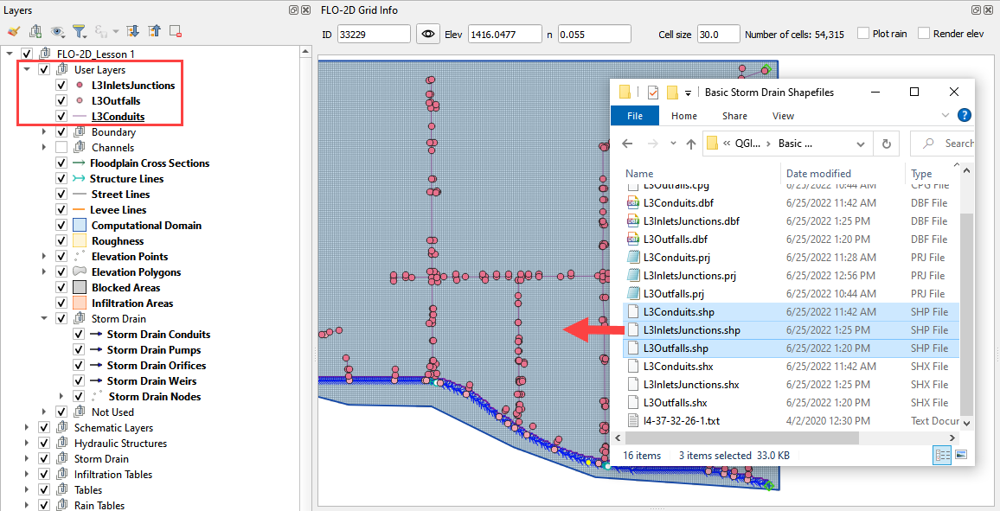
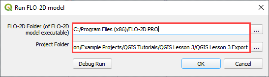

Lesson 3 – Create a Storm Drain System Using Shapefiles
Overview
This lesson will outline the process to create a storm drain network for FLO-2D. This is the quick version. It is better for learning QGIS and FLO-2D Plugin operations. For advanced storm drain modeling, see the Advanced Lessons.
Required Data
Start this lesson from the end of Lesson 2. It requires the channels and culverts. All data is provided in the Lesson folders.
File |
Content |
Location |
Shapefiles |
Inlets-Junctions, Outfalls, and Conduits |
QGIS Lesson 3\Basic Storm Drain Shapefiles |
I4-37-32-26-1.txt |
Rating Table |
QGIS Lesson 3\Basic Storm Drain Shapefiles |
Project Location C:\Users\Public\Documents\FLO-2D Pro Documentation\Example Projects\QGIS Tutorials
Check these folders to ensure the data is available before starting the lesson.
Step 1: Open QGIS and load the project

Open QGIS and drag Lesson 1.qgz onto the map space the file in QGIS and Load the Project into the FLO-2D Plugin.

Click Yes to load the plugin.

C:\Users\Public\Documents\FLO-2D PRO Documentation\Example Projects\QGIS Tutorials\QGIS Lesson 1\QGIS Lesson 1.qgz
If necessary add an aerial image to the map. See Lesson 1 - Part 2 - Step 3 for instructions.

Organize the map layers to facilitate the next steps. It is OK to group user layers. Notice the Not Used group for layers that are not required by this project.
Warning
Do not remove layers that are part of the geopackage. It may break the geopackage layout and corrupt the data files.

Step 2: Import the storm drain shapefiles
Click User Layers Group.
Drag the *.shp files from QGIS Lesson 3 folder and drop the files in the map space. The shapefiles should be located in the User Layers group.
C:\Users\Public\Documents\FLO-2D PRO Documentation\Example Projects\QGIS Tutorials\QGIS Lesson 3\ Basic Storm Drain Shapefiles
Important
For a detailed description of the shapefile features and attributes, go to Storm Drain - Shapefile Overview
Step 3: Select component fields from the shapefiles
Expand the Storm Drain Editor widget and click the Select components from shapefile layer button.

Use the Editor to assign the Inlets/Junctions parameters from the shapefile to the attribute table.
Note
Skip Pumps, Weirs, and Orifice fields for now.


Once all features are selected in the drop-down menus, click Assign Selected Inlets/Junctions, Outfalls and Conduits to create the data structures of the Storm Drain Components.
The following message will be displayed. Click OK.

Step 4: Assign the link node connections
Click the Simulate storm drain checkbox.
Click the Auto-assign link nodes button and select Conduits.


Step 5: Import rating tables
Click the Import Rating Table Button

Navigate to the I4 table with this path. Select the file and click Open.
C:\Users\Public\Documents\FLO-2D PRO Documentation\Example Projects\QGIS Tutorials\QGIS Lesson 3\ Storm Drain Shapefiles\I4-37-32-26-1.txt
The table was imported and assigned to the correct inlet node.
If an error was detected because one Type 4 inlet didn’t match a selected text file, it would be reported to this file:
Warning
If a Python error pops up because the Rating Table Warnings file can’t be written, simply perform this step again.
Step 6: Schematize the storm drain components
Click on Schematize Storm Drain Components in the Storm Drain Editor widget.
Once the storm drain components are schematized, the following dialog will appear. Click OK to close.

The storm drain schematized data layers have been completed. The storm drain components are now part of the schematized layers in the project.

Step 7: Export the project
Click the Set Control Variable icon.

Verify the data and Click Save.
This is a good point to save project.

Export the data files to the Project Folder in QGIS Lesson 3

C:\Users\Public\Documents\FLO-2D PRO Documentation\Example Projects\QGIS Tutorials\QGIS Lesson 3\Lesson 3 Export
Click OK to export the main project data files.

Save the swmm.inp file with the next dialog. Make sure the path is still Lesson 3 Export.

Check the .INP control variables and click OK.
These are the storm drain components that were written to the swmm.inp file.

The final dialog will be displayed. The associated storm drain data files are created when the storm drain switch has been turned ON.
Step 8: Run the simulation
Click the Run FLO-2D Icon.

Set the Project path and the FLO-2D Engine Path and click OK to start the simulation.
Set the FLO-2D Folder.
C:\program files (x86)\flo-2d pro
Set the Project Folder.
C:\Users\Public\Documents\FLO-2D PRO Documentation\Example Projects\QGIS Tutorials\QGIS Lesson 3\ QGIS Lesson 3 Export
After the storm drain model is complete, review FLO-2D Storm Drain Manual Chapter 6 for more details about reviewing results.
Step 9. Storm drain project recovery point
Save all layers that may be in editing mode, save the project, close QGIS.
Find Lesson 1 qgz and gpkg in a File Browser. Select zip them. This will create a recovery point with the simple storm drain.
Reload the project in QGIS.
Important
If you can’t remember how to do this step, go to Lesson 1 Part 2.
Summary
This is the completion of a full storm drain model using the FLO-2D model along with digital terrain elevation data and an inflow hydrograph, rain, and boundary conditions from Lesson 1 and 2. This lesson has demonstrated how to create the storm drain system by using shapefiles for conduits, inlets/junctions, and outfalls.